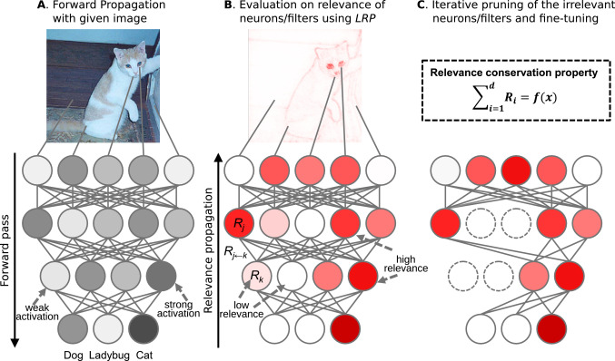

CompactNet
Optimizing deep learning models compression for efficient deployment
Project Information
This project focuses on creating a user-friendly web interface for pruning any deep learning model. The goal is to make model compression accessible and efficient for users, regardless of their expertise in deep learning.
Introduction
Importance of Model Compression
Model compression is crucial for deploying deep learning models on resource-constrained devices such as mobile phones and IoT devices. It helps in reducing the latency and improving the efficiency of models, making them suitable for real-time applications.
Background
Introduction to Deep Learning
Deep learning is a subset of machine learning that involves neural networks with many layers. It has been successfully applied to various fields, including image recognition, natural language processing, and autonomous driving.
Challenges in Deep Learning
Despite its success, deep learning models are often large and computationally intensive, making them challenging to deploy on devices with limited resources.
Importance of Model Compression
Model compression techniques address these challenges by reducing the model size and computational requirements. This enables the deployment of deep learning models on a wider range of devices and applications.
Types of Model Compression
Pruning
Pruning involves removing unnecessary neurons or weights in a neural network, thereby reducing the model size and improving computational efficiency.
Quantization
Quantization reduces the precision of the weights and activations of a model, which can significantly decrease the model size and inference time.

Knowledge Distillation
Knowledge distillation involves training a smaller model (student) to replicate the behavior of a larger model (teacher), thus achieving similar performance with fewer parameters.
Pruning Algorithms
L1 Structured Filter Pruning
L1 structured pruning removes filters with the smallest L1 norm, assuming they have the least impact on the model's performance.
- 1. Initialize the model parameters \( W \).
- 2. Train the model for the specified number of epochs using the training data \( X \).
- 3. Compute L1 norms for each filter \( F_{i,j} \) in each layer \( i \):
- 4. Sort filters by their L1 norms and select those with the smallest norms to prune.
- 5. Zeroize the selected filters.
- 6. Extract the pruned model parameters \( W^* \).
L2 Structured Filter Pruning
L2 structured pruning removes filters with the smallest L2 norm, assuming they have the least impact on the model's performance.
- 1. Initialize the model parameters \( W \).
- 2. Train the model for the specified number of epochs using the training data \( X \).
- 3. Compute L2 norms for each filter \( F_{i,j} \) in each layer \( i \):
- 4. Sort filters by their L2 norms and select those with the smallest norms to prune.
- 5. Zeroize the selected filters.
- 6. Extract the pruned model parameters \( W^* \).
FPGM (Filter Pruning via Geometric Median)
FPGM removes filters that are closest to the geometric median, assuming these filters have the least impact on the model's performance.
- 1. Initialize the model parameters \( W \).
- 2. Train the model for the specified number of epochs using the training data \( X \).
- 3. Compute the geometric median \( x_{GM} \) of filters in each layer \( i \):
- 4. Find and prune filters nearest to the geometric median.
- 5. Extract the pruned model parameters \( W^* \).
SNIP (Single-shot Network Pruning based on Connection Sensitivity)
SNIP prunes connections based on their sensitivity to the loss function, retaining only the most important connections.
- 1. Initialize the network weights \( w \).
- 2. Sample a mini-batch of training data \( D_b \).
- 3. Compute connection sensitivity \( s_j \) for each connection \( j \):
- 4. Sort sensitivity scores \( s \) in descending order.
- 5. Prune the top-\(\kappa\) connections based on sensitivity scores.
- 6. Train the pruned network to get \( w^* \).
GraSP (Gradient Signal Preservation)
GraSP prunes connections that least affect the gradient signal, preserving the most important connections for training.
- 1. Initialize the network weights \( w \).
- 2. Sample a mini-batch of training data \( D_b \).
- 3. Compute GraSP scores \( g_j \) for each connection \( j \):
- 4. Sort GraSP scores \( s \) in descending order.
- 5. Prune the top-\(\kappa\) connections based on GraSP scores.
- 6. Train the pruned network to get \( w^* \).
SynFlow (Iterative Synaptic Flow Pruning)
SynFlow iteratively prunes connections by preserving synaptic flow, ensuring the network remains connected and functional.
- 1. Set the model to evaluation mode.
- 2. Initialize the binary mask \( \mu \) to 1.
- 3. Iteratively prune for \( n \) steps:
- a. Apply the mask \( \theta_{\mu} = \mu \odot \theta_0 \).
- b. Compute SynFlow objective \( R \):
- c. Compute SynFlow score \( S \):
- d. Determine the pruning threshold \( \tau \):
- e. Update the mask \( \mu = (\tau < S) \).
- 4. Return the pruned network \( f(x; \mu \odot \theta_0) \).
OurAlgo (Combined Gradient and Magnitude-Based Pruning)
OurAlgo combines magnitude and gradient-based pruning to retain the most important parameters for model performance.
- 1. Initialize the network weights \( w \).
- 2. Sample a mini-batch of training data \( D_b \).
- Compute Magnitude Scores:
- a. For each parameter \( p_i \), calculate \( \text{mag\_scores}[i] = |p_i| \).
- Compute Gradient Scores:
- a. Perform forward and backward pass on \( D_b \) to compute gradients.
- b. For each parameter \( p_i \) with mask \( m_i \), calculate \( \text{grad\_scores}[i] = \left| \frac{\partial L}{\partial m_i} \right| \).
- Combine Scores:
- a. For each parameter \( p_i \), calculate \( \text{combined\_scores}[i] = \alpha \times \text{mag\_scores}[i] + \beta \times \text{grad\_scores}[i] \).
- 4. Sort combined scores and prune parameters with the lowest scores.
- 5. Fine-tune the pruned network.